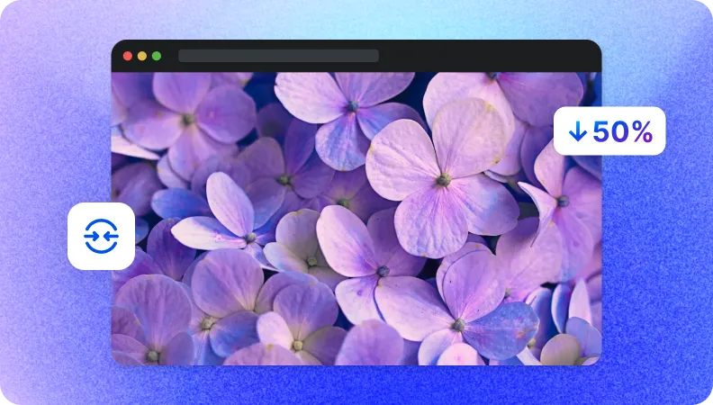

SnapEdit sử dụng các phương pháp nén tệp tin lossy để loại bỏ dữ liệu không quan trọng từ hình ảnh. Tỷ lệ nén phụ thuộc vào mức chất lượng được xác định.
Nén ảnh trực tuyến miễn phí
SnapEdit cung cấp thêm tính năng mới giúp giảm dung lượng ảnh lên đến 95%. Công cụ nén ảnh này giúp tối ưu hóa trang web, quản lý lữu trữ và truyền dữ liệu. Hãy thử ngay bây giờ!
Hoặc chỉ cần thả vào đây
Ctrl + V để dán hình ảnh
Không có hình ảnh? Thử một trong những cái này
Cách nén ảnh trên website, Điện thoại?
Quá trình nén ảnh bằng 3 bước đơn giản như sau:
1 Tải lên
Tải ảnh lên công cụ nén ảnh SnapEdit. Ở trang tải lên người dùng có thể chọn thêm nhiều file ảnh cần nén dung lượng.
2 Nén ảnh
Sau khi tất cả các ảnh được tải lên, nhấn vào nút Nén Ngay Bây Giờ để giảm dung lượng. Chờ cho đến khi quá trình hoàn tất.
3 Tải xuống
Tải các ảnh đã được nén xuống và yên tâm sử dụng. Ảnh tải xuống không chứa watermark.
Công Cụ Giảm Dung Lượng KB Ảnh Hữu Ích
Tăng Tốc Độ Trang Web
Nén ảnh để tối ưu hóa trang web một cách nhanh chóng và dễ dàng. Công cụ nén ảnh SnapEdit là công cụ không thể thiếu cho các nhà phát triển web và quản trị viên web. Giảm kích thước ảnh lớn sẽ tăng tốc độ trang web.

Tăng Tốc Độ Truyền Dữ Liệu
Công cụ nén ảnh của SnapEdit cung cấp giải pháp cho việc kết nối chậm và băng thông hạn chế. Việc nén dung lượng ảnh, làm tăng tốc độ truyền dữ liệu, cải thiện giao tiếp và tiết kiệm thời gian.
Tối Ưu Quản Lý Lưu Trữ
Công cụ nén ảnh của chúng tôi cũng giúp quản lý lưu trữ đám mây một cách hiệu quả hơn. Việc giảm dung lượng ảnh giúp bạn giải phóng đáng kể không gian và giảm chi phí lưu trữ. Điều này hữu ích cho việc lưu trữ, quản lý ảnh và làm việc với các thư viện ảnh lớn.
Nén ảnh chất lượng cao
SnapEdit sử dụng phương pháp nén tập tin lossy nhằm loại bỏ dữ liệu không quan trọng với mắt người dùng. Phương pháp này dẫn đến tỷ lệ nén cao hơn nhiều so với phương pháp nén lossless mà vẫn đảm bảo chất lượng ảnh.
Chấp nhận nhiều định dạng ảnh
Công cụ nén ảnh của chúng tôi chấp nhận các tệp PNG, JPEG và JPG. Bạn có thể tải lên tối đa 50 ảnh mỗi lần để xử lý hàng hoạt
An toàn sử dụng
Việc nén ảnh được thực hiện bởi máy khách, không phải trên máy chủ, do đó kết quả trả ảnh về nhanh chóng và an toàn. Điều này đảm bảo an toàn cho người dùng và không lưu trữ hình ảnh trên SnapEdit.
Dễ sử dụng và miễn phí
Công cụ nén ảnh online dễ sử dụng và hoàn toàn miễn phí. Giao diện dễ sử dụng, quy trình đơn giản và bạn có thể sử dụng công cụ này trên bất kỳ thiết bị nào có kết nối internet.
Câu Hỏi Thường Gặp về Công cụ Nén Ảnh SnapEdit
SnapEdit có thể giảm kích thước ảnh lên đến 95%. Tuy nhiên, việc nén quá mức có thể ảnh hưởng đến chất lượng ảnh.
Không, người dùng không thể điều chỉnh tỷ lệ nén hoặc chất lượng đầu ra.
Hiện tại, SnapEdit không hỗ trợ nén lossless. SnapEdit tập trung vào việc nén lossy để đạt được tỷ lệ nén cao. Chúng tôi sẽ cập nhật với tùy chọn nén lossless trong tương lai gần.
Không, bạn chỉ có thể nén các tệp PNG, JPEG và JPG. Tuy nhiên, SnapEdit có thể hỗ trợ các định dạng mới trong tương lai như GIF, HEIC, TIFF, WebP.
SnapEdit có thể xử lý hàng loạt tác vụ. Bạn có thể tải lên tối đa 50 ảnh trong một phiên.
Có, SnapEdit có sẵn miễn phí trên iOS và Android.
Chúng tôi không thể đảm bảo kết quả chính xác. Kích thước cuối cùng phụ thuộc vào nhiều yếu tố như nội dung của ảnh, cài đặt hiện tại của chúng tôi và các định dạng được sử dụng. Tuy nhiên, với công cụ nén của chúng tôi, bạn có thể giảm kích thước ảnh xuống 20 KB vì quá trình nén của chúng tôi có nhiều mất mát và tập trung vào việc duy trì chất lượng ảnh.